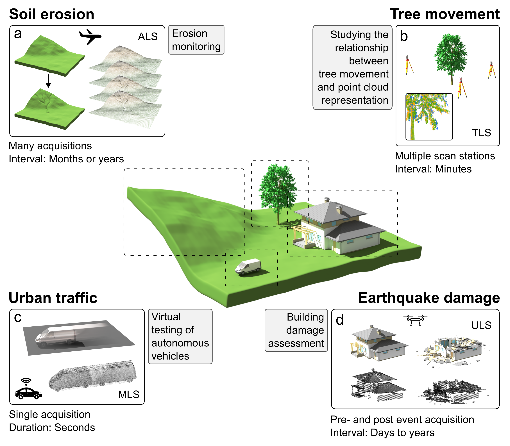
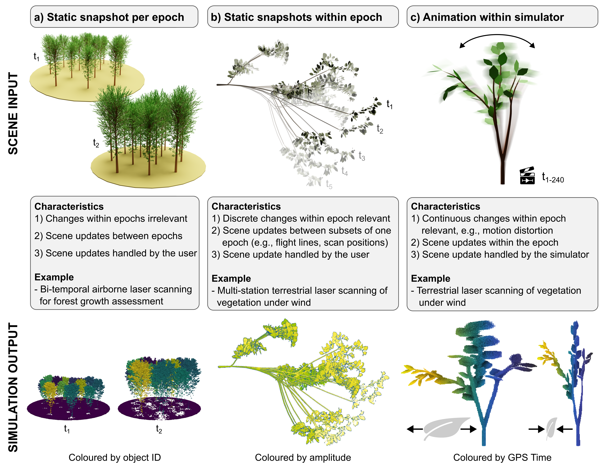
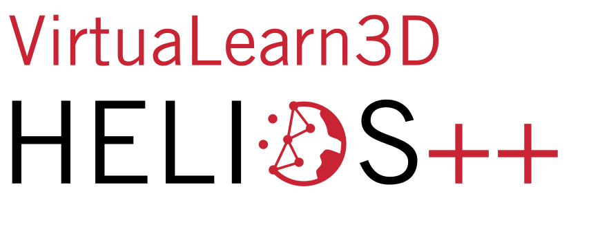
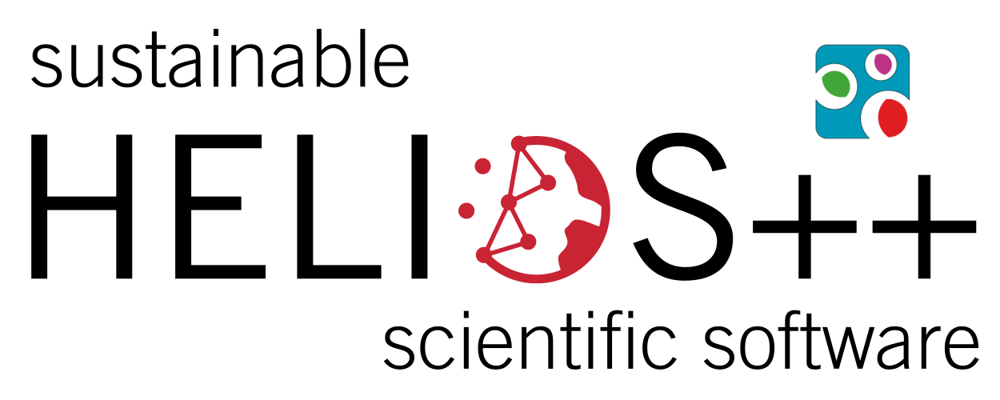
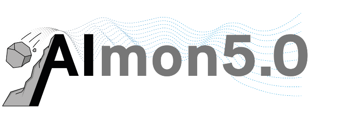

Virtual Laser Scanning of Dynamic Scenes (VLS-4D)
Author: Hannah Weiser
Contributors: William Albert, Ronald Tabernig, Bernhard Höfle
Year: 2025
This webpage provides an overview of the VLS-4D framework using a variety of examples from the field of vegetation monitoring, simulated with the Heidelberg LiDAR Operations Simulator HELIOS++.
VLS-4D refers to VLS of dynamic scenes. This means that instead of loading a static 3D scene and virtually scanning it in a single epoch, as done by the majority of recent studies, we work with a dynamic scene.
This opens up a range of application in the field of remote sensing of the environment.

This dynamic scene can be represented as (a) a sequence of static 3D scenes (e.g., 3D meshes), or by (b) a single 3D scene that changes during the simulation.
In the case of a sequence of static 3D scenes, each scene represents a different point in time. We can scan the different versions of the scene in multiple surveys to create multi-temporal laser scanning point clouds or point cloud time series. Or the static versions represent the dynamics of a scene within a single survey, which is divided into several scans, e.g., from different flight lines in airborne laser scanning or different scan positions in terrestrial laser scanning.
In the case of a single animated 3D scene, the scene moves or deforms during the simulation, i.e., within a single epoch. In HELIOS++, object movements in the form of rigid motions (e.g., translation, rotation) are supported and can be defined via the scene XML syntax.
The described mechanisms lead to three concept of VLS-4D: The concept of one static snapshot per epoch, the concept of static snapshots within an epoch, and the concept of animation within the simulation.

In three notebooks, we will give illustrate each concept with relevant application examples from vegetation monitoring. We provide all necessary code to reproduce the results. This way, you can learn how to use the VLS-4D framework for your own research.
Use the following links to directly access the notebooks:
- One static snapshot per epoch
- Several static snapshots within an epoch
- Animation within the simulation
Related Publication
Weiser, H., & Höfle, B. (2026). Advancing vegetation monitoring with virtual laser scanning of dynamic scenes (VLS-4D): Opportunities, implementations and future perspectives. Methods in Ecology and Evolution, 17, 33–51. https://doi.org/10.1111/2041-210x.70189.
Funding

DFG (Deutsche Forschungsgemeinschaft, German Research Foundation)
| Project | Project number | |
|---|---|---|
 |
VirtuaLearn3D | 496418931 |
 |
Fostering a community-driven and sustainable HELIOS++ scientific software | 528521476 |
BMBF (Bundesministerium für Bildung und Forschung, Federal Ministry of Education and Research)
| Project | Funding code | |
|---|---|---|
 |
AIMON5.0 | 02WDG1696 |
Contact
Hannah Weiser
h.weiser@uni-heidelberg.de
3D Geospatial Data Processing (3DGeo) Research Group
Institute of Geography
Heidelberg University